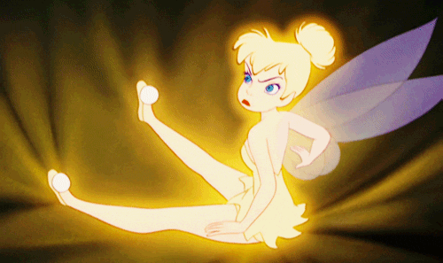

<div id="clochetteContent" class="tabContent" ng-controller="ClochetteCtrl">
    <div class="form-wrapper greyBox">
        <label>Entrer des choix :</label>
        <div ng-repeat="choice in choices">
            <form class="form-inline">
                <div class="form-group choiceFormGroup">
                    <label for="choiceInput" class="btn removeBtn removeChoiceBtn" ng-click="removeChoice(choice)" tooltip-placement="right" uib-tooltip="Supprimer ce choix"><i class="glyphicon glyphicon-remove"></i></label>
                    <input id="choiceInput" type="text" class="form-control" ng-model="choice.value" placeholder="Entrer un choix ...">
                </div>
            </form>
        </div>
        <a class="btn btn-lg" ng-click="addChoice()" tooltip-placement="bottom" uib-tooltip="Ajouter un choix"><i class="glyphicon glyphicon-plus"></i></a>


        <script type="text/ng-template" id="myModalContent.html">
            <div class="modal-header">
                
            </div>
            <div class="modal-body">
                <h2 class="modal-title clochetteResult">
                    {{result}}
                </h2>
            </div>
            <div class="modal-footer">
                <button class="btn btn-primary" type="button" ng-click="close()">OK</button>
            </div>
        </script>
        <button class="btn btn-primary pickBtn" ng-click="pick()">Choisis pour moi stp !</button>
    </div>
</div>